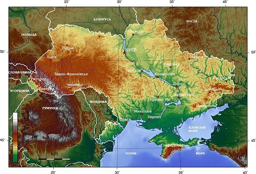

Україна розташована в південно-східній частині Європи. Вона має спільні сухопутні державні кордони з Білоруссю на півночі, з Польщею на заході, зі Словаччиною, Угорщиною, Румунією і Молдовою на південному заході й із Росією на сході. Південь України омивається Чорним та Азовським морями. Морські кордони вона має з Румунією і Росією.
Рельєф
У рельєфі України переважають рівнини (95 % від усієї площі), що належать до південно-західної окраїни Східноєвропейської рівнини. Вони поєднують Поліську, Придніпровську й Причорноморську низовини, що займають 70 % поверхні України, а також Волинську, Подільську, Придніпровську, Донецьку й інші височини. Пересічна абсолютна висота рівнин становить 175 м. В Україні знаходиться найвища точка Східноєвропейської рівнини — гора Берда, висотою 515 м над рівнем моря.
Клімат
На території України протікає 63 119 річок і струмків загальною довжиною понад 206 тис. км, із них довжиною 10 км і більше — 3302[51]. Більшість річок належить до басейну Чорного й Азовського морів і лише з 2 % території води мають стік до Балтійського басейну (Сян і Західний Буг із їхніми притоками). Головні річки — Дніпро, Сіверський Донець, Південний Буг, Дністер, Дунай. Озер у країні близько 20 тис., з них лише 43 мають площу 10 км² і більше[52]. Найбільше озеро Українського Полісся — Світязь має площу 27,5 км². Більшу площу мають солонуваті озера лиманного походження — придунайські (Ялпуг — 149 км²), причорноморські (штучно опріснений Кундук (Сасик) — 204,8 км²), кримські (солоне озеро Сасик-Сиваш — 71 км²). В Україні споруджено 1157 водосховищ і 28,8 тис. ставків[52]. Найбільші водосховища — на Дніпрі (Кременчуцьке, Каховське, Київське, Канівське). Найбільший лиман — Дністровський — 360 км². Найсолонішим є Куяльницький лиман — 157—227 ‰.
Водотоки та водойми
На території України протікає 63 119 річок і струмків загальною довжиною понад 206 тис. км, із них довжиною 10 км і більше — 3302[51]. Більшість річок належить до басейну Чорного й Азовського морів і лише з 2 % території води мають стік до Балтійського басейну (Сян і Західний Буг із їхніми притоками). Головні річки — Дніпро, Сіверський Донець, Південний Буг, Дністер, Дунай. Озер у країні близько 20 тис., з них лише 43 мають площу 10 км² і більше[52]. Найбільше озеро Українського Полісся — Світязь має площу 27,5 км². Більшу площу мають солонуваті озера лиманного походження — придунайські (Ялпуг — 149 км²), причорноморські (штучно опріснений Кундук (Сасик) — 204,8 км²), кримські (солоне озеро Сасик-Сиваш — 71 км²). В Україні споруджено 1157 водосховищ і 28,8 тис. ставків[52]. Найбільші водосховища — на Дніпрі (Кременчуцьке, Каховське, Київське, Канівське). Найбільший лиман — Дністровський — 360 км². Найсолонішим є Куяльницький лиман — 157—227 ‰.